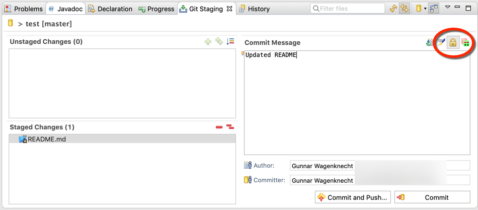

| EGit 5.3 New and Noteworthy | ||
|---|---|---|
|
|
||
| Contributors | ||
EGit 5.3.0 requires Eclipse Neon (4.6) or better. If you use an older version of Eclipse, you are recommended to upgrade the complete Eclipse IDE.
EGit 5.3.0 can sign commits with GPG.

The new icon in the upper right will allow you to toggle commit signing on or off. The default is read from the Git configuration. If the config option commit.gpgsign is set to true, the button will be selected by default. The value of user.signingkey will be used to determine the signing key. If the value is unset, the email address of the committer will be used to lookup the key. If no key can be found a commit will fail.
Keys will be looked up from your GPG keyring (either ~/.gnupg/pubring.kbx or ~/.gnupg/secring.gpg; on Windows the directory %APPDATA%\gnupg is used—if it exists—instead of ~/.gnupg).
See the following GitHub help pages for help on GPG signing keys:
In the last release we had introduced a new SSH client based on the Apache MINA sshd library as an alternative to the JSch-based client. In EGit 5.3.0 the default settings are switched: by default, the Apache MINA implementation is used.
We plan to remove the old JSch SSH implementation completely in a future release of EGit.
Text comparisons in Eclipse have been improved to make "Show Whitespace" work in more cases.
Also, concurrent editing of a file in a merge editor and in another editor open on the same file has been improved and works now better and even for files not in the Eclipse workspace.

Note that both showing whitespace and concurrent editing depend not only on the way EGit sets up the comparison (which is what we improved) but also on the actual editors being used. These editors are beyond the control of EGit. With files not in the Eclipse workspace, one may encounter Platform bug 214351 when a file is open in another editor.
EGit 5.3.0 includes lots of less noticeable improvements in the UI, plus a number of bug fixes. We also made a number of performance improvements. The complete list of new features and bug fixes is available in the release notes.
|
|
||
| Contributors |